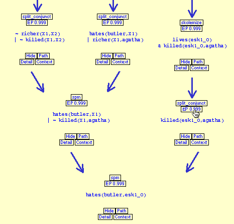

The Inference Web Browser

Capabilities
- Graphical rendering of a PML proof
- Focus on current path to root
- Display ancestor assertions (the context)
- Links to metadata and provenance information
- Information about the inference engine and rule
- Links to the IW NodeSet browser